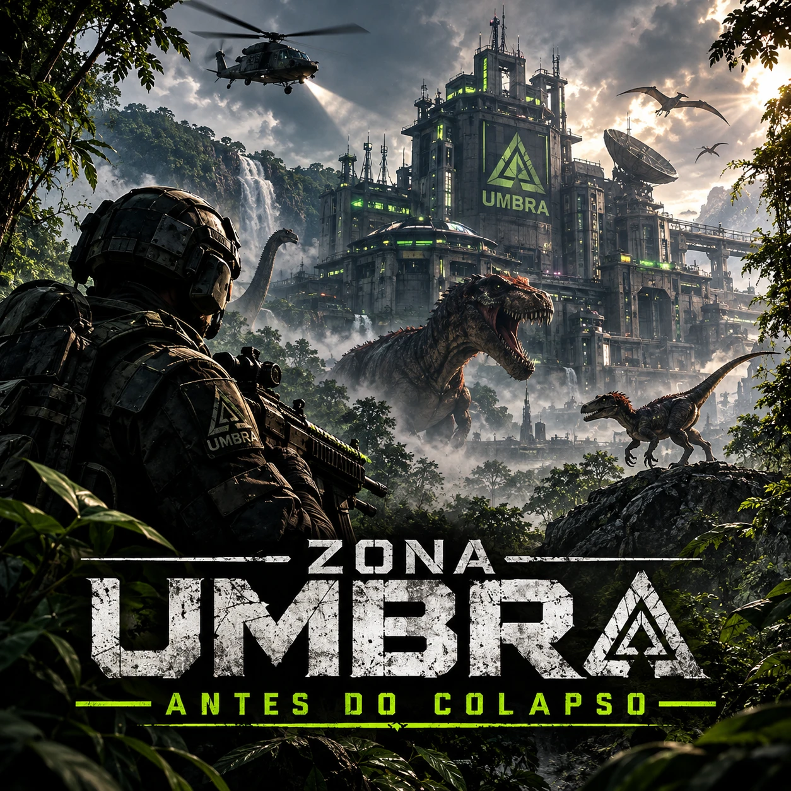

Zona Umbra
Campanha 4 · prólogo · solo e offline · só abre depois das três primeiras. O que aconteceu antes do Nexus 7: uma floresta gigante, uma cidade murada e animais que não deveriam existir.
O Projeto EDEN
Antes do NEXUS-7, a UMBRA testou como o corpo pode se regenerar em animais extintos que ela mesma trouxe de volta: primeiro os mamíferos da Era do Gelo, depois, mais fundo na instalação, os dinossauros. Parte deles escapou e hoje vive na floresta, ao lado da aldeia e da reserva cercada.
No fim, a UMBRA acionou o protocolo AURORA antes da hora. O laboratório explodiu e uma névoa verde cobriu toda a floresta. Ela atravessou o mar e chegou a uma plataforma de petróleo: a P-07, onde começa o Anexo 7.
As operações
Pista de resgate
Fotografe 5 pontos da fauna ao longo da trilha que leva à aldeia e volte à pista. Nem tudo o que se mexe nessa floresta é manso.
A reserva cercada
Entre nos portões, colete 4 amostras marcadas no mapa e volte. A regeneração dos animais não era acaso: era o objetivo.
A aldeia sem nome
Oito cabanas em círculo e uma fogueira. Encontre 4 diários. O aviso: a cidade vai acender de novo.
Documentos da cidade
Entre pela muralha, recupere 3 documentos do laboratório, um deles atrás do prédio principal. Um nome se repete em todas as páginas: Agente 56.
A zona está caindo
Aguente na pista até o helicóptero chegar. O laboratório explode e a névoa verde cobre tudo. O Agente 56 não voltou. A história segue na plataforma P-07.
A Combatente 65
A partir da reserva cercada, a Combatente 65 anda com você, atira nos dinossauros que te perseguem e não se machuca. Quem terminar a campanha ganha o croma Combatente 65 do Combatente 7 · Legado, com as skins Ferrari para todas as armas e o paraquedas vermelho. Ele não pode ser vendido nem trocado.
Os animais
Oito dinossauros e oito mamíferos pré-históricos vivem na zona. Os mamíferos fogem de você; os dinossauros, não. Veja cada um em 3D, com nome e história, no Bestiário do jogo.